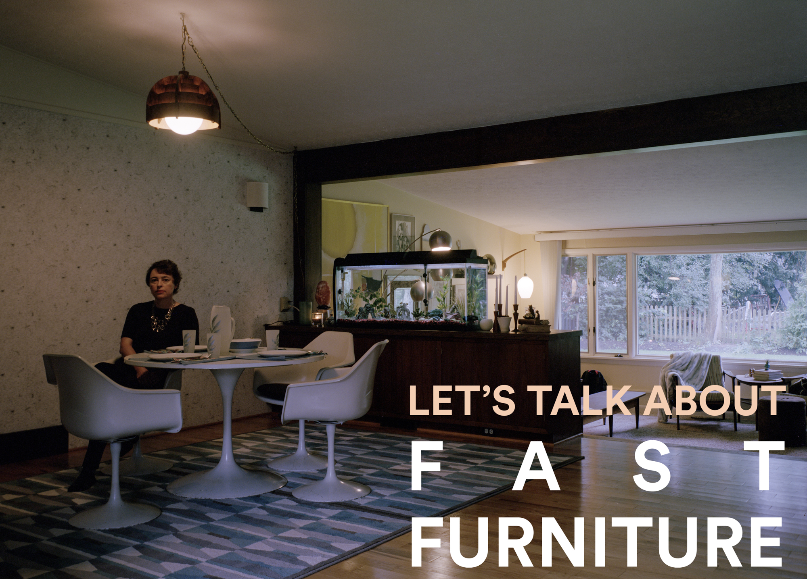
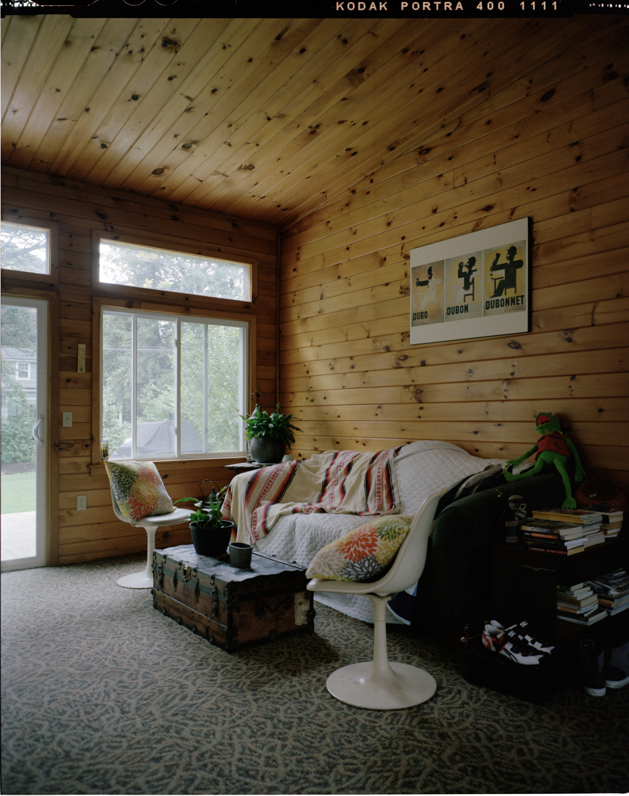
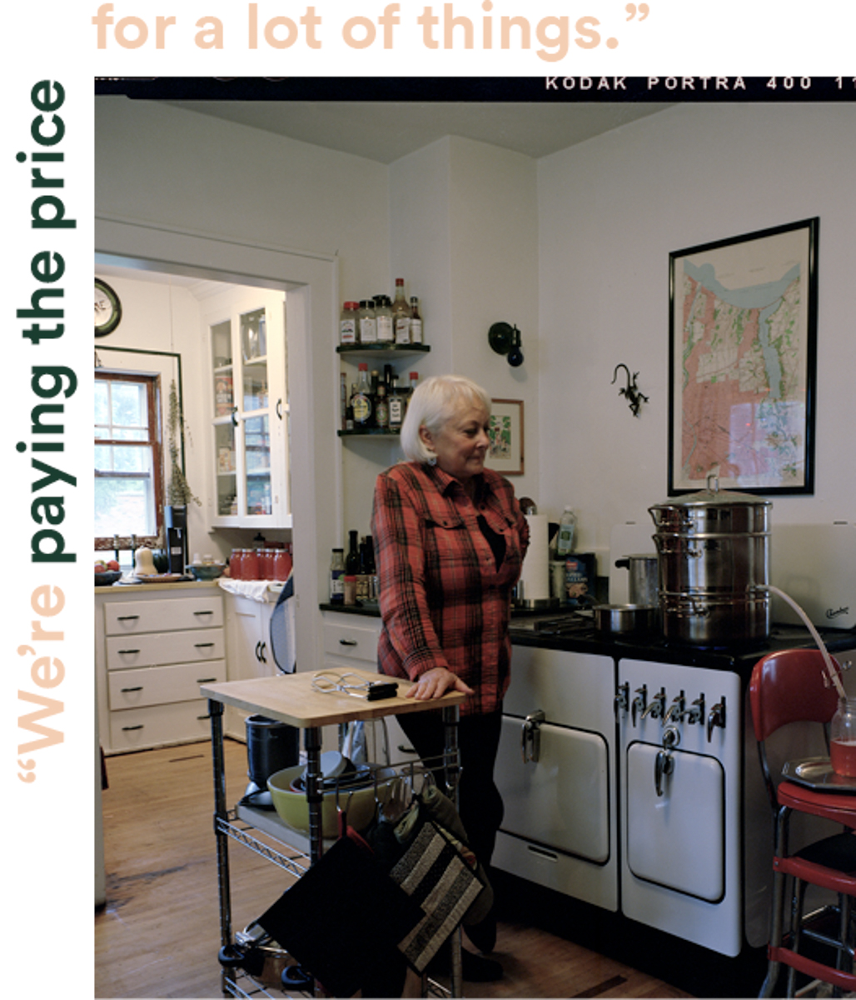
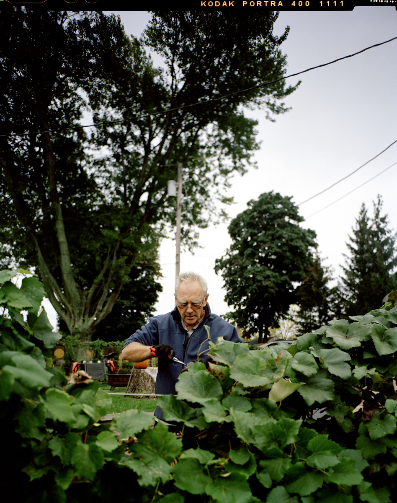

FAST FURNITURE

Considering the almost ten million tons of waste created a year by furniture, this is a problem that’s only getting bigger. Those chairs were built to last as long as your lease, not the duration of your life. That couch might look nice in a cute display but it’s going to look pretty bad in a landfill a few years from now. So what’s the alternative? Can we shift our way of thinking from short-term to long-term?
FINDING FORTUNE
“It turns out they’ve been there since the center was built in the 1970ʼs, and they’ve always been there since. Torgerson-Lamark said she doesn’t care [if she takes the set] as long as she gets a table and chairs to replace it, and I’m like I’ll get you that table and chairs! She had no problem with this, so I got onto Craigslist and found a $150 oak round table and chairs and dropped them off and picked up these. Best find ever.”
Torgerson-Lamark didn’t just find a high quality piece of furniture for her home, she also rediscovered the value of craftsmanship. In addition, she kept it from being tossed into a landfill a few years down the road.
“We try to find things that we like and That [are] going to live a long life. I don’t like to throw away stuff. If I can avoid it, I don’t throw away anything. It either goes to consignment, resell, I give it to somebody, but I can’t literally put something on the curb… I canʼt do that.”
Torgerson-Lamark’s love of quality found furniture is hardly unique. She is part of a larger trend of more conscious furniture buyers who buy for the long term.
The O’Neil’s are also a part of this trend. Patrick O’Neil and his wife, Pam, have been living on Stutson street for years. Patrick has bought up 5 houses next to each other. He lives in one and rents out the others to people. Patrick rehabs different parts of each home he has purchased — and he doesn’t take shortcuts.


“Youʼre talking about this throw away society — ‘we canʼt afford it, itʼs too expensive’ — you think itʼs expensive to invest in linseed oil paint?” said O’Neil. “What are we going to do when we have to pay the price for lead? Well, weʼre dealing with that now. Weʼre paying the price for lead now.”
This way of thinking influences all of O’Neil’s purchasing decisions. “Weʼre paying the price for a lot of things. Plastic. Weʼre going to pay the price big time on that,” he continued. Of course, others think differently.
BEING CONSCIOUS
“When I talk to my more red-neck friends who poo-poo on liberal concepts, I say, youʼve got kids, grandkids…your grandfather could swim in the lake, drink the water…now you canʼt. Whatʼs it going to be like for the rest? For your kids? Grandkids? Do you want a good life for them?”
“Itʼs your willingness to reach full consciousness about what youʼre doing. We make compromises every single day. Do you drive a car? Thatʼs a compromise. You have to be willing to accept levels of it. You canʼt set rules.”
William Morris — arguably the greatest designer of the 19th century — said, “Have nothing in your houses that you do not know to be useful or believe to be beautiful.”¹ There’s nothing beautiful about cheap carcinogenic particle board spat out a million times a minute. And there’s nothing useful about a landfill that grows by countless tons with each passing day.
We owe it to each other to make thoughtful decisions. When we purchase our furniture, we need to think about where it will be decades from now, not years from now. It’s difficult to think that far ahead when it feels like there is no tomorrow. But if we don’t start thinking long term ‒ especially regarding furniture ‒ there won’t be a tomorrow.
